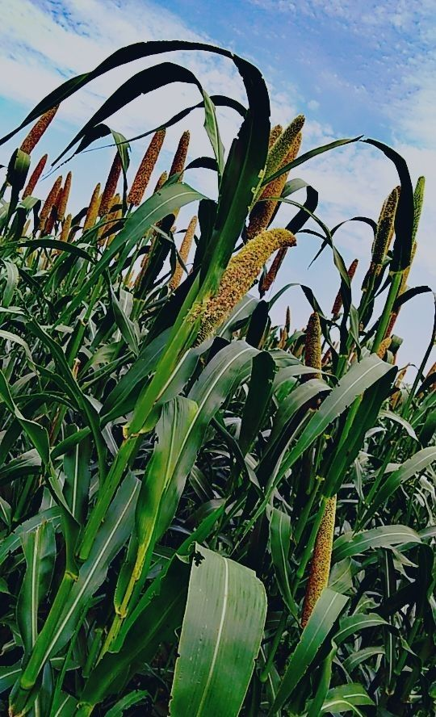

Bajra (Pearl Millet) Cultivation Guide

1. Land Preparation
Plow the field 2-3 times to break soil clods and improve aeration.
Use a harrow or cultivator to achieve a fine tilth.
Level the field to facilitate uniform germination.
2. Seed Selection & Sowing
Select certified, disease-free hybrid or improved varieties.
Sow during June–July in kharif season; spacing 45 cm x 10–15 cm.
Seed rate: 4–5 kg/acre. Treat seeds with fungicide before sowing.
3. Water Management
Bajra is drought-tolerant and requires minimal irrigation.
Ensure one irrigation at flowering and grain filling stages if rainfall is inadequate.
4. Fertilization Schedule
Basal Dose:
FYM (5–10 tons), Urea (30–35 kg), DAP (20–25 kg).
Top Dressing (25–30 days):
Urea (20–25 kg).
5. Weed & Pest Management
Weeds:
Two manual weedings at 20 and 40 days after sowing.
Pests:
Shoot fly and stem borer — use systemic insecticides as needed.
Diseases:
Downy mildew and smut — treat seeds and apply fungicides.
6. Investment Breakdown (Per Acre)
Input
Estimated Cost (INR)
Seeds
₹300 – ₹600
Fertilizers
₹1,500 – ₹2,500
Pesticides/Fungicides
₹800 – ₹1,200
Labor
₹5,000 – ₹8,000
Irrigation (if needed)
₹1,000 – ₹2,000
Total Investment
₹9,000 – ₹14,000 per acre
7. Harvesting & Yield
Harvest when grains are hard and moisture is low.
Yield: 8–12 quintals per acre.
8. Market Rate & Profit Estimation
Average market price: ₹2,000 – ₹2,800 per quintal.
Gross returns per acre: ₹16,000 – ₹33,600.
Net profit: ₹7,000 – ₹20,000 per acre.